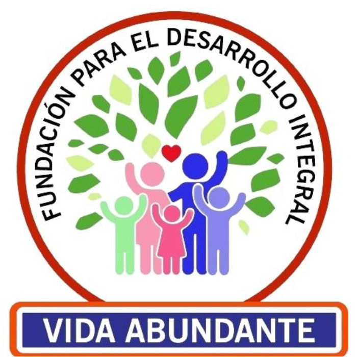

FUNDACIÓN VIDA ABUNDANTE

Nuestra Fundación es una institución sin ánimo de lucro, creada para servir al bien común y generar impacto social. Somos una organización pluralista, independiente y no gubernamental (ONG), que trabaja con pasión y compromiso para transformar realidades y fomentar el bienestar colectivo.
NUESTRA VISION
Ser en el 2029 un instrumento social de impacto para mejorar la calidad de vida y reducir la pobreza, promoviendo el desarrollo integral. Liderar la innovación y fomentar la participación en la transformación social. Trascender a nivel nacional para encontrar soluciones a necesidades básicas insatisfechas.
NUESTRA MISION
Promover el desarrollo integral de la niñez, juventud, mujeres jefas de hogar, adultos mayores y familias, enfocándose en lo espiritual, educativo, social, cultural, salud y economía. Explorar soluciones innovadoras y aplicar tecnología para lograr este propósito.
.
OBJETIVO GENERAL

La Fundación trabajará para mejorar las condiciones de vida de las comunidades mediante la ejecución de programas y proyectos sociales. Su enfoque abarcará el desarrollo social, económico, cultural y espiritual, promoviendo un crecimiento sostenible basado en principios que garanticen una vida digna y en abundancia.
OBJETIVOS ESPECIFICOS
Desarrollo Infantil y Juvenil: Garantizar el desarrollo integral de niños y jóvenes sin discriminación, mediante proyectos en alianza con instituciones públicas y privadas a nivel nacional e internacional.

Protección de la Juventud: Implementar programas que resguarden a los jóvenes de riesgos que afecten su crecimiento personal, fomentando su desarrollo educativo, cultural, profesional y espiritual.

Apoyo a Mujeres jefas de Hogar: Fortalecer la productividad y calidad de vida de las mujeres cabeza de familia mediante programas de capacitación, emprendimiento y bienestar familiar.
Bienestar del Adulto Mayor: Mejorar las condiciones de vida de los adultos mayores a través de programas que promuevan su bienestar emocional, social, nutricional y productivo.

Fortalecimiento de la familia: Ejecutar programas que aseguren la estabilidad económica, educativa y social de las familias, apoyando su formación y desarrollo integral.
Atención a Población Desplazada: Gestionar recursos y asistencia para mejorar la calidad de vida de las personas en situación de desplazamiento.
Formación de Líderes: Capacitar líderes sociales y cívicos que fomenten la economía solidaria, el emprendimiento y la generación de empleo.
Investigación y Alianzas Estratégicas: Capacitar líderes sociales y cívicos que fomenten la economía solidaria, el emprendimiento y la generación de empleo.

Acciones Complementarias: Desarrollar iniciativas que refuercen la visión, misión y objetivos de la Fundación, garantizando su cumplimiento y sostenibilidad.
NUESTROS PRINCIPIOS Y VALORES
NUESTROS PRINCIPIOS
- AUTONOMÍA ADMINISTRATIVA Y PRESUPUESTAL
- IGUALDAD Y DEMOCRACIA
- NO DISCRIMINACIÓN
- MORALIDAD CRISTIANA
- PARTICIPACIÓN COMUNITARIA
- SOLIDARIDAD Y MUTUALISMO
- EDUCACIÓN PERMANENTE
- SERVICIO CON AMOR AL PRÓJIMO
- RESPETO A LA CONSTITUCIÓN Y NORMAS
NUESTROS VALORES

SOLIDARIDAD

INCLUSIÓN

RESPETO

COMPROMISO
ESPIRITUALIDAD
EQUIDAD

RESPONDABILIDAD SOCIAL

TRABAJO EN EQUIPO

INNOVACIÓN
SOSTENIBILIDAD